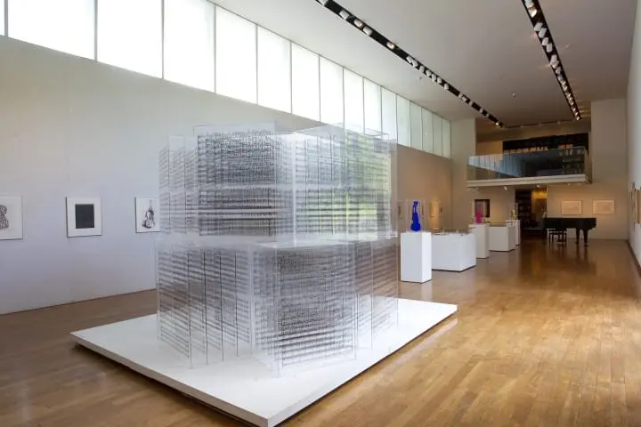

由布院(湯布院)是個怎樣的地方呢？
以由布岳為中心，可以看到許多美麗的田園風景，這裡的溫泉量非常充沛，可以說是大分縣由布市的溫泉鄉，屬於是日本的溫泉地之一。
由布院有兩個名字，分別為「由布院」和「湯布院」。最早叫做「由布院」，之後將「由布院町」和「湯平町」名稱合併後才有了「湯布院」的名字。車站的名稱採用的就是最先有的「由布院」。本篇文章排除固定的名字之外，將一律使用「由布院」陳述。
「湯布院 Floral Village」走進童話世界
「湯布院 Floral Village」是一個以電影『哈利波特』場景內的英國科茨沃爾德街景為主題的樂園。據說科茨沃爾德的村莊是世界上最美的村，在這裡將其重現，體驗各種夢幻的感覺。穿上長袍手上站著一隻貓頭鷹，宛如變身成哈利波特。
博多出發搭觀光列車前往由布院！
博多站到由布院站大約2小時(單程一般費用為4,560日圓)，如果是一日遊的話，可以在9：24博多出發，回程搭乘17：08從由布院發車的班次。霧迷濛夢幻金鱗湖
由布岳山麓下的「金鱗湖」是一個能夠感受到四季分明的景點。湖邊有設置遊歩道，可以享受森林浴。
棧橋的另一邊往天祖神社走，會漸漸離開觀光人群，在這裡可以拍到山群倒映在湖面的美麗風景。
另外，金鱗湖最大的特色就是從湖的底部會湧出溫泉和清水，是一個相當罕見的胡。因此只要到了氣溫開始降地的秋天至冬天早晨，水面就會起霧。
吃美食囉！豐後牛、可樂餅、蛋糕捲
到由布院一定要吃的美食之一就是「由布Mabushi 心 站前分店」的「豐後牛三吃(日語：豊後牛まぶし)」。使用的是大分縣產的黑毛和牛、豐後牛，吃法就像是鰻魚三吃一樣。豐後牛和湯布院種植的「湯布米」非常好吃，大家一定要來嘗試看看。
由布院 空想之森 Artegio
「由布院 空想之森 Artegio」是一個以音樂和藝術為題的美術館。有許多仿照藝術價或樂器創作出來的獨特作品，美術館内播放的音樂更讓人能夠沉浸在藝術的世界裏頭。

地圖